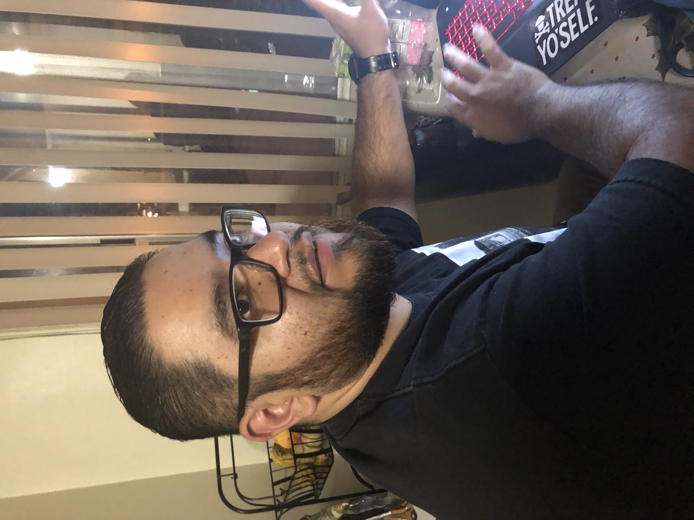

Dan lopez

Summary
Aspiring Software Engineer with a background as a unit clerk in a hospital, bringing strong attention to detail, effective communication, and robust problem-solving skills. Proven ability to manage complex tasks and adapt to fast-paced environments. Experienced in handling medical records, scheduling, and coordinating with diverse teams. Passionate about leveraging technical skills and continuous learning to transition into software engineering. Proficient in languages like Python and JavaScript, with a strong foundation in full-stack web development.
Education
Work Experience
Sharp Chula Vista Medical Center
Aug 2016 - Present
- Unit Clerk
- Managing patient records, and important documents, with meticulous attention to detail.
- Communicate with medical staff, patients, physician, and other departments.
- Managing schedules, coordinating appoinments, and keeping records.
Trusted Mobility Repair
May 2011 - Aug 2016
- Call Center/Billing Manger
- Managed billing operations and customer service teams to ensure efficient workflow and resolution of customer issues.
- Implemented and maintained billing software, improving accuracy and reducing errors by 15%.
- Collaborated with IT teams to troubleshoot and resolve software issues, gaining hands-on experience with coding and debugging.
Skills
- Programming Languages: Python, JavaScript, Java, C++
- Web Development: HTML, CSS, React, Node.js
- Databases: SQL, MongoDB
- Containerization and CI/CD: Docker, Jenkins
- Testing Frameworks: Jest, Mocha, Selenium
- APIs: RESTful APIs, GraphQL
- Managed care contract knowledge
- Medical Billing Software
- Electronic Medical Records (EMR) Software
- Medical Manager Software
Awards and Certifications
- Employee of the Month - Trusted Mobility Repair
Others